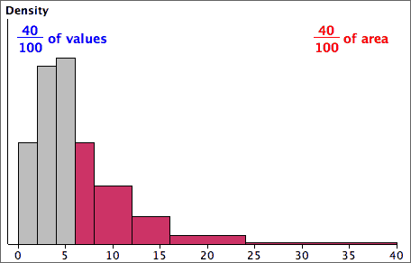

Area and proportion of values
The details of drawing histograms by hand with varying class widths are unimportant — a computer should be used. To interpret their shape remember that
The proportion of the total area above any classes equals the proportion of values in them.
For example,
